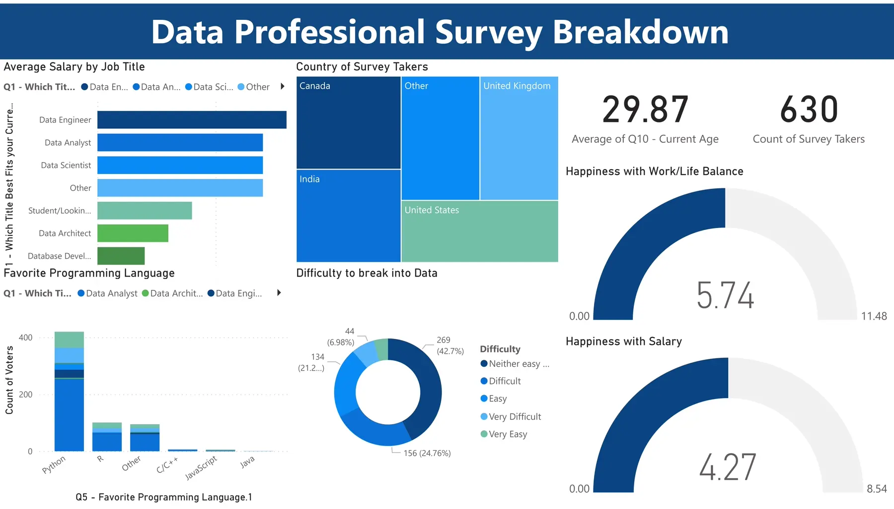

Career comparisons
Job-title salary bars and language preferences give the career data an immediate reading order.
Dashboard / Power BI
The people
behind the data.

A Power BI view of data professionals’ careers, compensation, preferred languages, and satisfaction with work.
Survey responses span roles, countries, preferences, and personal experiences. A useful overview must make these different dimensions easy to compare.
The dashboard brings salary by job title, respondent geography, favorite programming languages, and difficulty entering the field into a single view, alongside work-life and salary satisfaction.
Job-title salary bars and language preferences give the career data an immediate reading order.
A country treemap and respondent count provide context for the survey population.
Satisfaction gauges and an entry-difficulty breakdown complement compensation figures.
The project publishes the report link and a dashboard screenshot. The published view includes 630 respondents with an average age of 29.87.
Compensation is only one dimension of a career. Placing it beside satisfaction and entry difficulty makes the survey more useful to someone exploring the field.